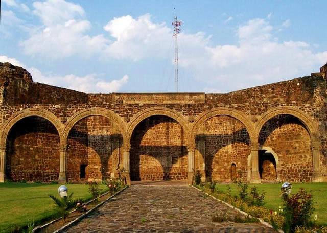
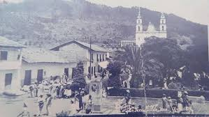
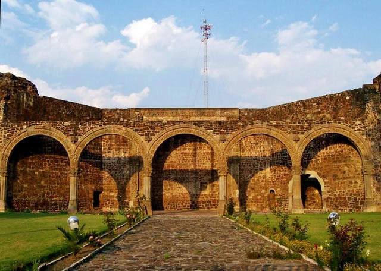
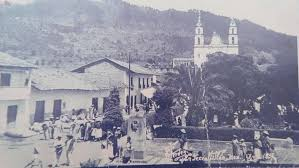

Historia
Texcaltitlán es un lugar cuya historia se remonta a tiempos prehispánicos. Su nombre proviene del náhuatl texcalli —que significa roca— y titlan —entre—, por lo que puede traducirse como “entre las rocas”. Este significado describe perfectamente su geografía, ya que el pueblo se asienta entre montañas, peñascos y formaciones rocosas que marcaron su desarrollo cultural desde la antigüedad .
Antes de la llegada de los españoles, la región estuvo habitada por grupos matlatzincas y también recibió influencia mexica. Por su ubicación estratégica, Texcaltitlán formaba parte de una zona limítrofe entre diferentes dominios y rutas comerciales. Durante el esplendor del Imperio Mexica, aproximadamente entre los años 1250 y 1520, la comunidad se convirtió en una cabecera regional de importancia. De ella dependían otros pueblos cercanos como Temascaltepec, Tejupilco y Tuzantla. En esa época se pagaban diversos tributos al imperio, entre ellos mantas de henequén, tintes, hongos y productos agrícolas propios de la zona.
Los cerros que rodean Texcaltitlán fueron también espacios de gran relevancia espiritual y defensiva. En las cimas de algunos de ellos, como la Peña de la Virgen, existieron estructuras antiguas que se cree funcionaron como templos o puntos de vigilancia. Hasta hoy se han hallado vestigios arqueológicos como basamentos, teocallis, fragmentos de vasijas y objetos rituales que demuestran la importancia del lugar en la época prehispánica.
Tras la conquista española, Texcaltitlán pasó a formar parte del sistema colonial. En documentos del virreinato aparece registrado como “Pueblo de Texcaltitlán”, con funciones administrativas relevantes en la región. A lo largo de los siglos XVII y XVIII se edificaron varias capillas e iglesias en las comunidades que hoy forman el municipio, consolidando la presencia religiosa en la zona y transformando poco a poco la vida social del pueblo.
El municipio de Texcaltitlán fue oficialmente establecido en 1861, ya en tiempos de México independiente. Durante el siglo XX, el lugar se modernizó gradualmente, construyendo caminos, ampliando la comunicación con ciudades cercanas y fortaleciendo su identidad cultural. En esta misma época nació uno de sus personajes más reconocidos: Agustín Millán Vivero, general revolucionario y figura política del Estado de México.
Texcaltitlán se distingue también por sus paisajes. Situado a más de 2,400 metros sobre el nivel del mar, su territorio está compuesto por montañas, barrancas, lagunas y bosques que influyen en la vida agrícola y en las tradiciones del pueblo. Cada cerro tiene nombre y muchos tienen historias o leyendas asociadas. Entre ellas se encuentra la antigua creencia de que el pueblo fue fundado por cuatro hermanos descendientes del último gobernante de Tula, o relatos sobre piedras sagradas y guardianes invisibles que protegen ciertos parajes.
Hoy en día, Texcaltitlán conserva una mezcla única de historia, naturaleza y cultura. Sus tradiciones, su gastronomía, sus fiestas y su entorno montañoso lo convierten en un destino auténtico que refleja la identidad profunda del sur del Estado de México.
 


